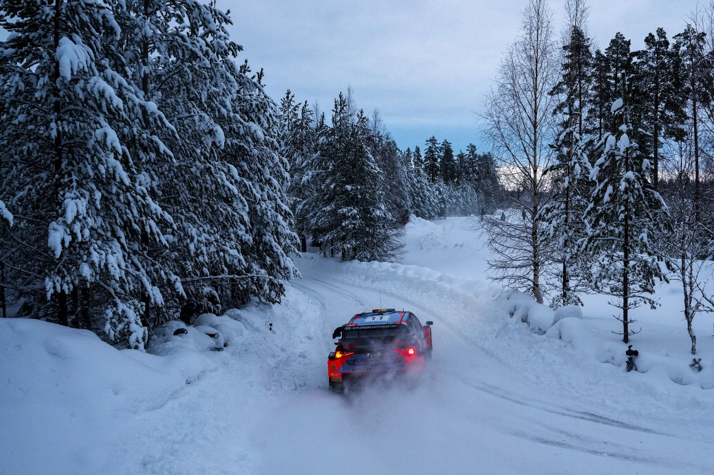
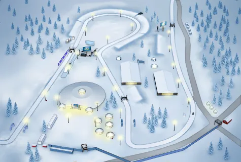
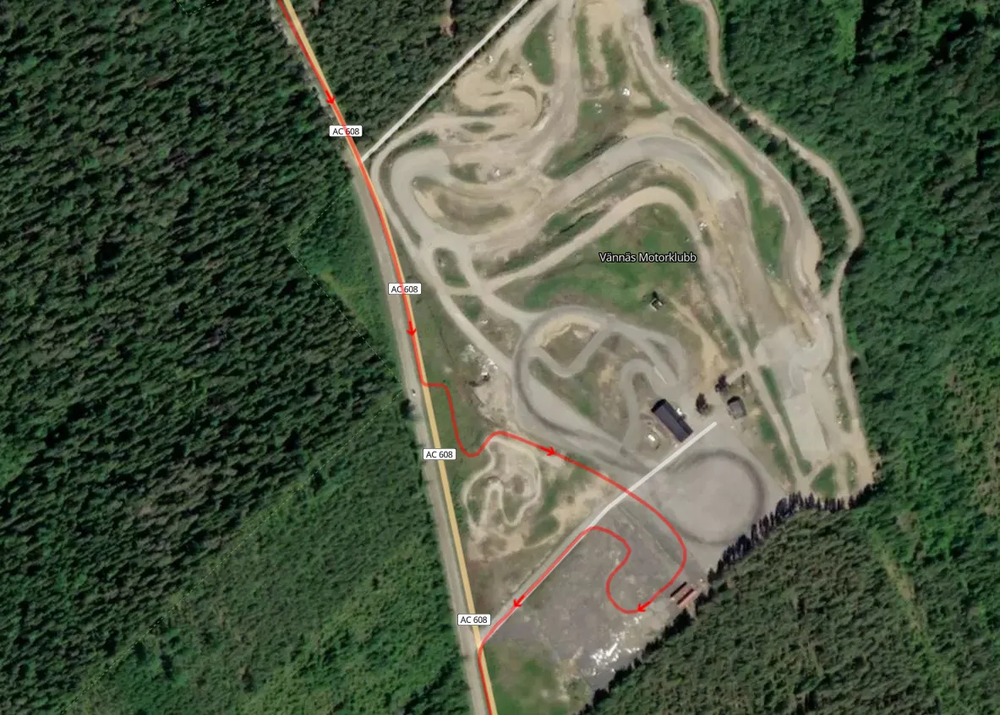
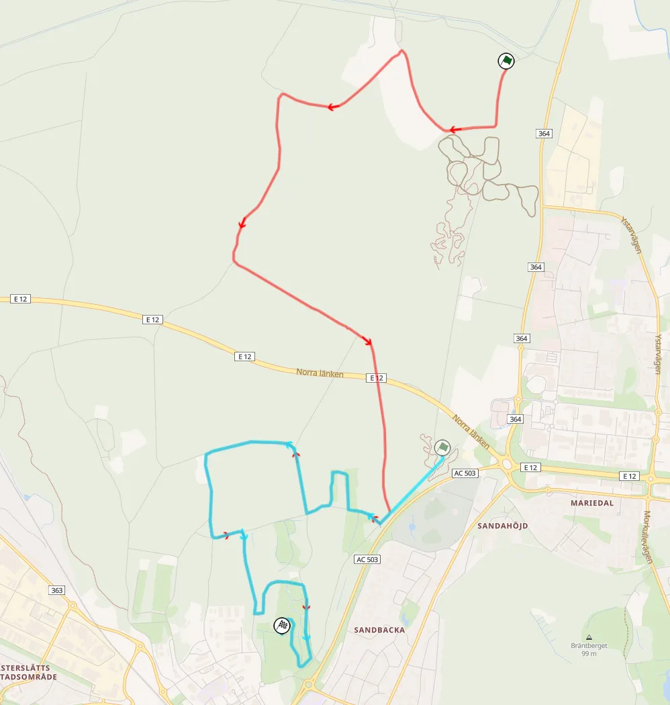
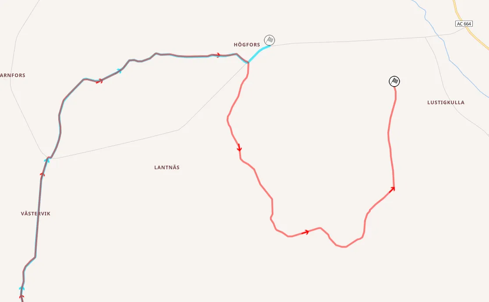

Rally Sweden 2025 - Route Preview
Rally Sweden is the second round of the 2025 WRC season, and the only full snow event in the championship. The rally is once again based in the city of Umeå, and features 3 brand new stages. All of the stages that were used on Friday last year do not feature in this year's rally, including Brattby.
Thursday
Umeå City is a brand new Shakedown in the city of Umeå. The first 1.5km are on a semi-wide smooth road. The rest of the stage is on a narrow trail passing through a park, with the stage finish being next to the Ume River. Most definitely not a representative Shakedown, that would be much better as an SSS.
Street view of the Shakedown test, at about 2.1km from the start
SS1/8 Umeå Sprint is the opening stage of the rally, and remains unchanged from last year. It's a mix of straights and junctions with the end of the stage being on the Red Barn Arena.
Onboard of Umeå Sprint, which will be as ever be ran in the dark
The arena section features two big jumps, and long bends.

The Red Barn Arena
Friday
Friday is the longest day of the rally, and features 2 new stages never used before in this rally. The day is comprised of 2 loops of 3 repeated stages, as well as a second run through Umeå Sprint.
SS2/5 Bygdsiljum is extended by 200m from last year. In 2024, this stage was used on Saturday. It's a long stage, at 28km, but it's not really special. Adrien Fourmaux won the first pass of this stage last year.
Most of the stage is on a medium-wide road, with many straights, connected with junctions or hairpins. The first 5km are fast, followed up by a massive 1.2km straight.
After that, the stage becomes slightly more technical, featuring two junctions at 17.5 and 19km, after which the road becomes narrower and more bumpy. Another hairpin follows at 21.8km, with the stage becoming wider, and almost flat out, until the 25km mark, after which it turns on a narrow, technical and bumpy road until the finish.
Onboard of Bygdsiljum, same stage as last year
SS3/6 Andersvattnet is new for this event. The first kilometer and a half is on a wide flat out road, that becomes slightly narrower, but still fast after a junction. At 4.5km the stage turns to a very wide flat out stretch that lasts until about the 7km mark, after which the stage turns to a road that becomes narrower and more technical.
Another long straight follows, at 9km, after which the character again changes to smooth and fast. A more technical section follows at 12km, that lasts about 4 kilometers. At 12.7km the road becomes wider momentarily and narrows up suddenly, with timber being stored next to the stage.
The end of the stage is on a slightly narrower but faster road.
Video of the Andersvattnet stage which is new for this year
SS4/7 Bäck is another new stage. At 10.8km it's the shortest non Umeå stage of the rally. It's a lot more technical compared to the other stages of the day. The first 4km are on a narrow and technical road, with many dips and bumps on the surface.
The stage changes character after that section, with a massive 3km straight, interrupted by a chicane/detour through a field at 5.3km.
The chicane at 5.3km
After the end of the straight, the stage turns to a more medium speed and medium-wide road, until the finish.
The day ends with a second pass through Umeå Sprint in the evening.
Saturday
Saturday is just over 100km and again features 2 loops of 3 repeated stages, as well as a pass through a longer version of the Umeå stage. Kolksele is a new stage for this event.
SS9/12 Vännäs is the opening stage of the day and remains unchanged from last year.
The start is on a medium-wide, fast road. The stage deviates from said road at 4km for a small "mickey mouse" section featuring a long right hander, after which the route rejoins the previous road via a junction momentarily, with a hairpin leading to another, more narrow and medium speed road.
The next 2km are completely flat out, after which the stage joins a narrow, but very fast, bumpy road from 7.33km to 11.72km.
Another flat out section follows, with the last couple of kilometres being on narrower, bumpy and more technical road, that features crests and dips.
Onboard of the second pass through this stage from last year
SS10/13 Sarsjöliden is another stage that remains unchanged for this year. This is the stage where Takamoto Katsuta went off the road last year, trying to chase Esapekka Lappi for the lead.
Sarsjöliden along with Umeå Sprint, are the only two stages to have been in a Rally Sweden itinerary, unchanged, since the event's relocation in 2022.
The first 5 kilometers are flat out, with big straights and fast corners. The next section is narrow fast and bumpy, but only lasts for about 2km, before the stage becomes wide again, at 6.83km.
At 8.28km there's a very tight corner, with the road becoming narrower, and also passing over a narrow bridge just afterwards. After that, the stage widens up, and is very fast, with big straights and junctions until the end.
Onboard of the stage. It was used with an almost identical layout in this local rally last year
SS11/14 Kolksele is another new stage for this event, and the only new stage on Saturday compared to last year. From the onboard, it looks like most of the stage is fast, with massive straights.
At 7.58km there's a chicane through a field, and again at 8.45km the stage leaves the main road for a narrower one, that's again almost completely straight. It rejoins the main road at 9.9km, before another deviation at 10km. The very fast character of the stage remains the same, with another chicane at 14km reminding the drivers about the brake pedal.
Onboard of Kolksele. The last few km are missing.
At 15.12km the stage goes to the Vännäs Motocross/RX track, but doesn't use any of the circuit, instead it just has a small mickey mouse section, before joining the main road again, until the finish.

The "mickey mouse" section near the finish of the stage from Rally-Maps
SS15/18 Umeå is the final stage of the day, with the second run being on Sunday, acting as the event's Power Stage. It's essentially an elongated version of the Umeå Sprint stage, with the Red Barn Arena being used a total of 4 times in this rally.

Umeå (red) and Umeå Sprint (turquoise). The finish of both stages is at the Red Barn Arena (Rally-Maps).
The start is on a typically fast road, with 2 tight, long hairpins at 1.27km and 2.17km. The stage passes under the highway via a tunnel at 4.53km, and rejoins the "Sprint" section shortly afterwards. Gregoire Munster went off the road in this stage last year on Saturday.
Sunday
At just 68.78km, Sunday is the shortest day of the rally, featuring just 3 stages, with one run twice. It does feature the longest stage of the rally at 29.35km.
SS16/17 Västervik is the longest stage of the rally, and also the only repeated stage of the day. In 2023 both Västervik and Sävar used parts of this stage, the latter one in reverse, and that was the stage where we saw tyre drama, with Craig Breen and Ott Tänak picking up punctures on the second pass.
The stage is extended by 4km compared to last year, with the finish of the stage being new. Last year it was the fastest stage of the rally, with the stage winner having an average speed of 135 km/h.

The new finish (red) compared to the 2024 one (turquoise). (Rally-Maps).
The first 22km of the stage are generally on fast, wide roads with three big straights at 5, 11.77 and 21km. The section from 14-16km is actually more technical, with a series of long, flowing corners.
At 22.4km, the stage joins a narrow road, which is bumpier, and a lot more technical than the wide previous one. It is still fast though, so this section is exceptionally challenging.
No video or street view is available for the new section, but from the satellite imagery it looks like it retains the same character as the previous narrow section, until about 1km from the finish, after which the stage becomes a flat out blast to the end.
Onboard of Västervik. The new finish section is missing from this video, as it is an onboard of the 2024 version.
The rally concludes with the second pass of Umeå, which by then will be extremely rutted on the approach to the arena, as it will have been used a total of 4 times.